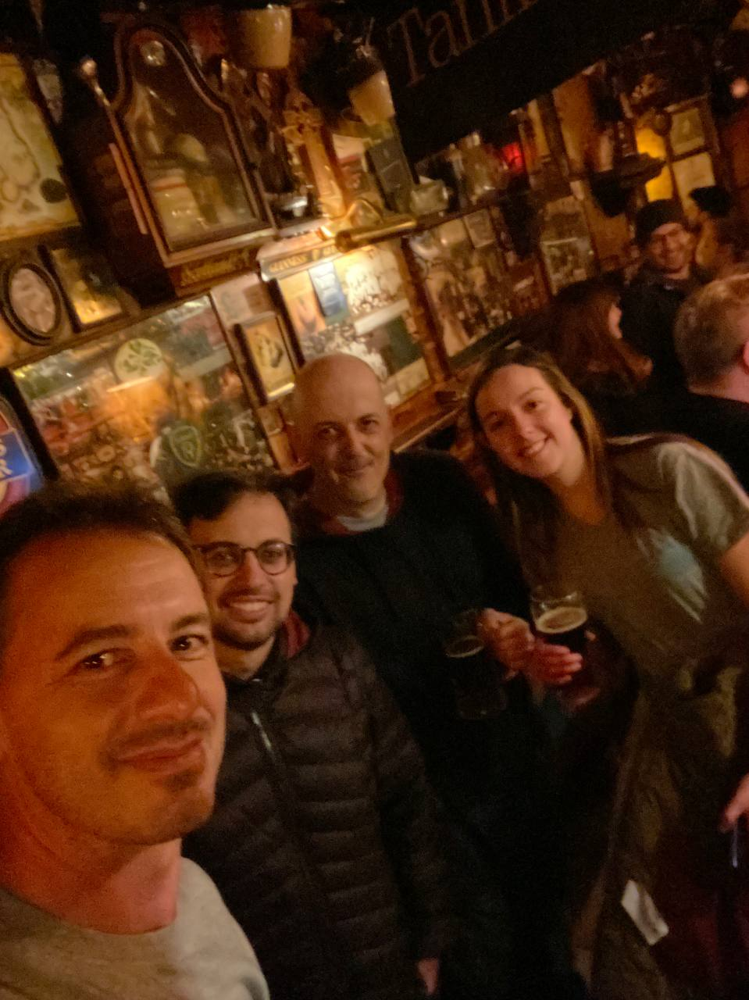
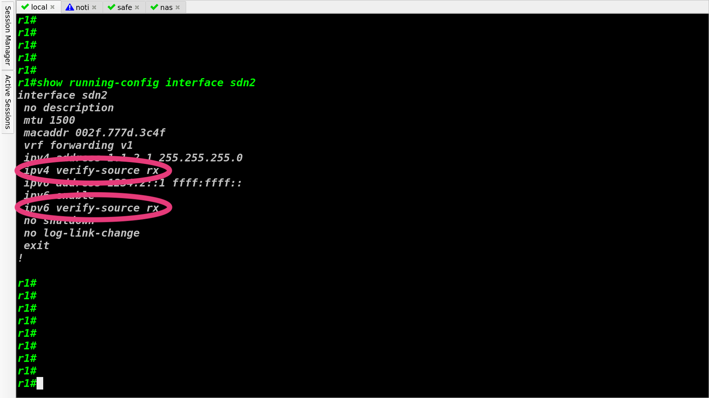
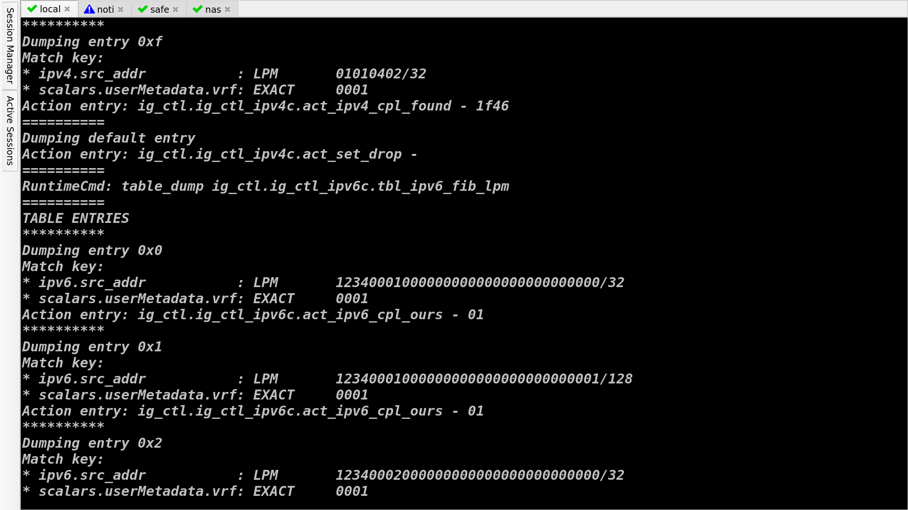
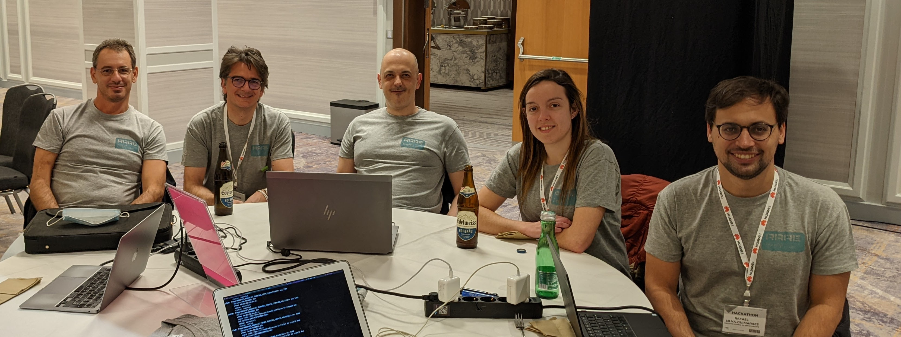

class: center, middle # IETF Hackathon<br />RARE/freeRtr IETF 113 19-20 March 2022 Online --- # What is RARE/freeRtr? **[freeRtr](http://www.freertr.net/)**: Free/Open Source IP/MPLS router control plane - lightweight Java implementation - supports _many_ IETF protocols **[RARE](http://rare.freertr.net/)**: _Router for Academia, Research, and Education_ - funded by EU as part of GÉANT/GN4-3 - add data planes (P4/Tofino, DPDK, XDP/BPF...) - enhance usability for use cases in actual (R&E) networks - support R&E users with special needs! **Examples:** - PolKA (see lightning talk in IRTF [PANRG, Thu 1300–1400](https://datatracker.ietf.org/meeting/113/materials/agenda-113-panrg)!) - HEP traffic flow marking using IPv6 Flow Label <br />(see Shawn McKee's talk in [_HEPiX topics in IETF_](https://indico.cern.ch/event/924996/#8-ipv6-topics-in-ietf)) --- # Hackathon Plan Bring the nascent RARE/freeRtr developer community together! - Create automation tools based on freeRtr NETCONF API - Investigate alignment with standard YANG modules (IETF/OpenConfig) - Streaming telemetry from hardware (Tofino) counters and integrate freeRtr telemetry to external visualization tools with a robust telemetry collection agent queuing write information into K,V database - Nix packaging for Intel’s open-source IPDK (on top of the Tofino SDE) - Switchdev support (For Spectrumv2/v3 ASIC) - Elaborate and propose IPFIX/Netflow/sFlow/PSAMP design - Add new Tofino counters - Leverage NETCONF to provide FW-UI(?) - Add Polka/TE GUI via NextUI automating NETCONF commands - AMT interworking - BIER interworking - MCAST-MENU update from freeRtr - Set up a scrubbing solution as reference design for DDOS with WEDGE100BF32X - (M)PolKA testing <How you planned to solve it?> <div class="my-footer"><p>IETF Hackathon - RARE/freeRtr </p></div> --- # What got done - Inter-op testing against IETF DHCPv4 server led to bug fix - P4/Tofino implementation of unicast RPF (BCPs 38/84)  <div class="my-footer"><p>IETF Hackathon - RARE/freeRtr </p></div> --- # uRPF: per-interface configuration <!-- .left[] -->  <div class="my-footer"><p>IETF Hackathon - RARE/freeRtr </p></div> --- # New P4 LPM tables for uRPF Checks <!-- .left[] -->  <div class="my-footer"><p>IETF Hackathon - RARE/freeRtr </p></div> --- # What we learned - freeRtr feature development workflow - configuration - P4 dataplane - CP/DP interface - integration tests - ... - uRPF more complex in IPv6 than in IPv4 due to ND integration <div class="my-footer"><p>IETF Hackathon - RARE/freeRtr </p></div> --- # Wrap up --- .left-column[ #### Team members (left-to-right): - Everson Scherrer Borges - Simon Leinen - Csaba Mate (mc36) - Carmen Misa - Rafael Guimarães  ] .right-column[ #### Other links: - http://www.freertr.net/ - http://rare.freertr.net/ - http://demo.freertr.net/ ] .left-column[ #### First timers @ IETF/Hackathon: - Csaba Mate (mc36) - Carmen Misa - Rafael Guimarães - Everson Scherrer Borges ] .right-column[ #### Notes and contacts: - http://docs.freertr.net/contacts/ ] <div class="my-footer"><p>IETF Hackathon - RARE/freeRtr </p></div>